The mission
At a glance
- WhoMartin + Eli
- WhenFri Oct 2 night · home Sat Oct 3
- CampMount Pisgah · site B26
- Car time~4–4½ hr each way
- Camp elevation~4,900 ft
- Hike~6 mi round trip
- Sunrise~7:26 AM
- Nearest bathroom~350 ft away
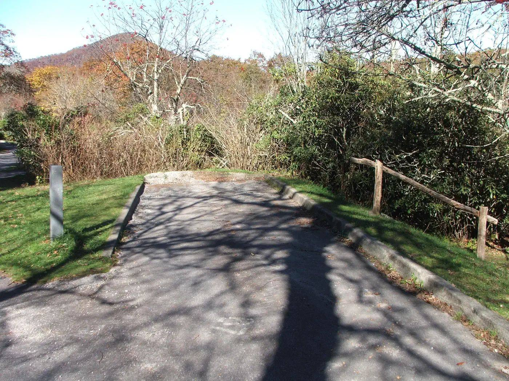

Time in the car
Getting there (Fri Oct 2)
Door to camp from Greensboro: plan on about 4 to 4½ hours with the stop. The drive home is about the same, with one charging stop on the way down the mountain. Cell service at camp is weak to none, so download music and shows before you leave.
Charging stops (Grivvy)
Old Fort Supercharger
- WhereStuckey's, I-40 exit 75
- Chargers12 stalls, up to 250 kW
- SnacksStuckey's store + Dairy Queen
- Time~20–30 min
This is the last big stop before the mountains, about an hour from camp. Good place to buy ice for the cooler.
Asheville · Westgate Supercharger
- WhereWestgate shopping center, West Asheville
- Chargers20 stalls, up to 325 kW
- From camp~23 mi · ~40 min
- Time~20–30 min
Handy for a top-up before the Parkway, or as the first stop on the way home. (Old Fort works on the way home too.)
The camp setup
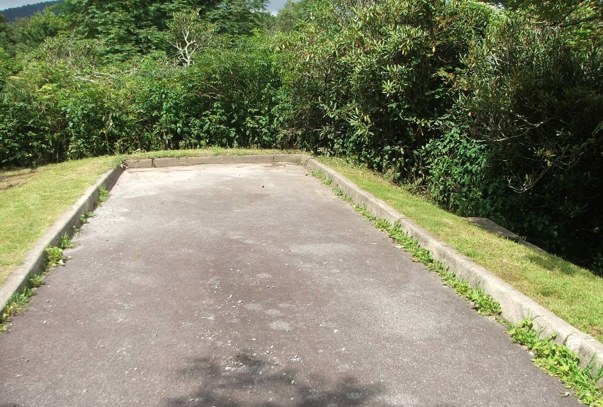
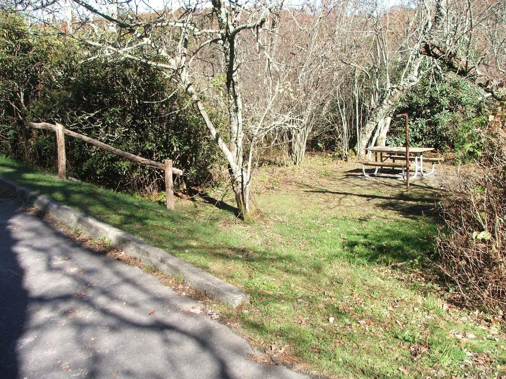
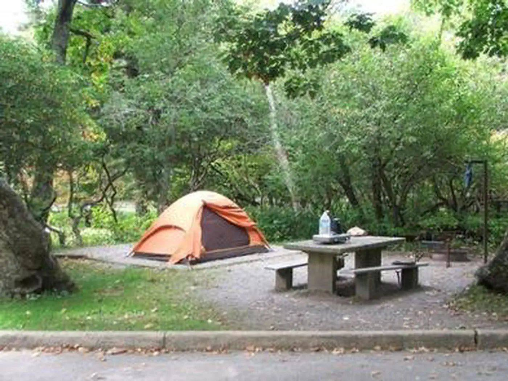
Eli's own tent
You get your own ground tent (borrowed) set up right next to the truck, with:
- Your own air mattress (we'll test it for leaks the night before)
- Sleeping bag and pillow
- Electric blanket powered by the truck. It really helps on a cold mountain night.
Truck-bed tent
Martin sleeps in Grivvy's bed on a queen air mattress under a truck-bed tent. There's no rooftop tent this time. You'll be a few feet apart.
Site B26 is a quiet one, tucked away from Parkway traffic. It has a picnic table, a fire ring with a grill grate, and a lantern post.
Where are the bathrooms?
Short answer: really close
There are two restroom buildings within about a 2-minute walk of B26. Both have real flush toilets and sinks, and both are open in early October (the campground runs through Oct 25).
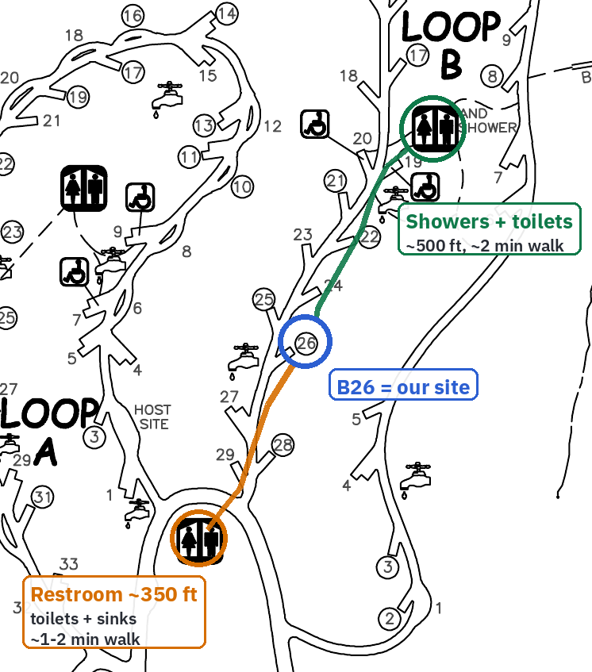
Entrance restroom · ~350 ft
From B26, walk toward the campground entrance (south), past sites 27–29. The building sits where Loops A and B split. It has flush toilets and sinks but no showers. About a 1–2 minute walk, and the best one for a middle-of-the-night trip.
Loop B shower house · ~500 ft
From B26, walk farther into Loop B (north), past sites 24–21. The building is in the middle of the loop near site 19. It has flush toilets, sinks, and hot showers, including accessible ones. About a 2-minute walk. Go here for a morning shower after the hike.
Take your headlamp at night. The loop road is dark and there are no streetlights.
The sunrise hike


The route, step by step
- Leave camp around 5:00–5:30 AM with headlamps on. Walk out the campground entrance and carefully cross the Parkway toward the Pisgah Inn.
- Buck Spring Trail · ~1.1 mi. This is part of the Mountains-to-Sea Trail (look for white dot blazes). It runs from the Pisgah Inn to the Mount Pisgah parking area and passes the spot where George Vanderbilt's hunting lodge stood. Rocky and rooty, with gentle ups and downs.
- Mount Pisgah parking area. Walk to the far end of the lot, where the Mount Pisgah trailhead is.
- Mount Pisgah Trail · the final climb, ~1.3 mi and ~700 ft up. Flat at first, then log and rock steps. The second half is steep and rocky, and it ends at the observation deck next to the big TV tower.
- Sunrise on the deck. The sky starts glowing around 7:00. Sunrise is about 7:26 AM. On a clear morning you can see the Shining Rock Wilderness, the French Broad valley, and even Asheville.
- Back the same way (about 1¼ hours down) for breakfast at camp.
Hike rules
- Stay together. Stay within sight of each other the whole time, especially in the dark.
- Headlamp + backup. Charge it the day before. A phone light works as backup, but it drains the battery fast.
- Walk on the trail, not the road. The Parkway has no shoulder, and cars can't see you in the dark.
- Wet rocks are slippery. Take it slow on the steep part, and use hiking poles if you want them.
- It's windy and cold on top. Wear a warm layer and a beanie, and bring water and a protein bar.
- Plan B: if it's pouring or stormy, we'll sleep in and hike after breakfast instead. Being "in the cloud" on top is still pretty cool.
The schedule

Sunset Friday is about 7:14 PM. Sunrise Saturday is about 7:26 AM. Parkway road status: NPS closures.
Weather forecast
National Weather Service forecast for the Mount Pisgah area (~4,900 ft), as of Mon Sep 28, 2026, 10:02 AM ET. It will change, so check the live forecast before we go.
| Fri Oct 2 | High 68° · Mostly sunny, then a chance of showers after 8 AM · 40% |
|---|---|
| Fri night | Low 58° · Mostly cloudy, chance of showers · 40% |
| Sat Oct 3 | High 62° · Partly sunny, chance of showers · 50% |
| Sat night | Low 55° · Mostly cloudy, chance of showers · 50% |
What October nights at 5,000 ft feel like
Normal for the first week of October up here: days in the low 60s and nights in the mid-40s. About 1 night in 10 drops into the 30s, and a frosty night near freezing can happen (based on 20 years of weather data for this spot). It feels colder than the number because of the damp air, the wind on the summit, and sitting still at 5 AM.
So bring warm layers even if the forecast looks mild, keep the sleeping bag zipped, and let the electric blanket do its job.
More photos
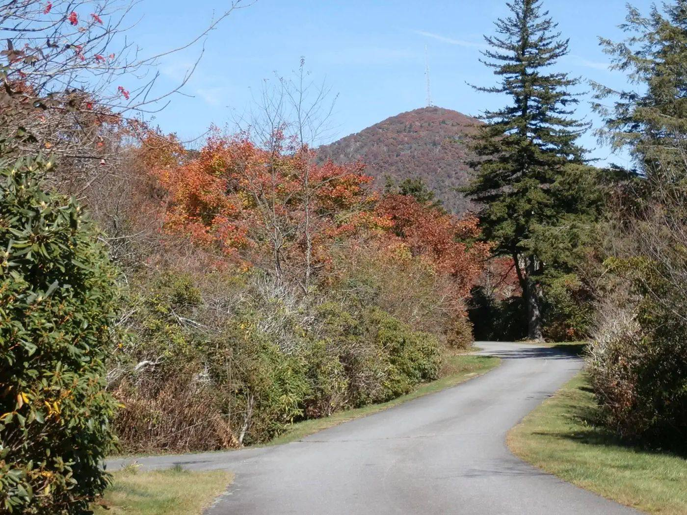
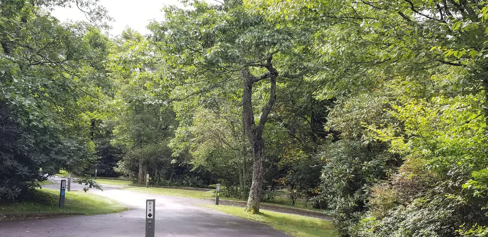
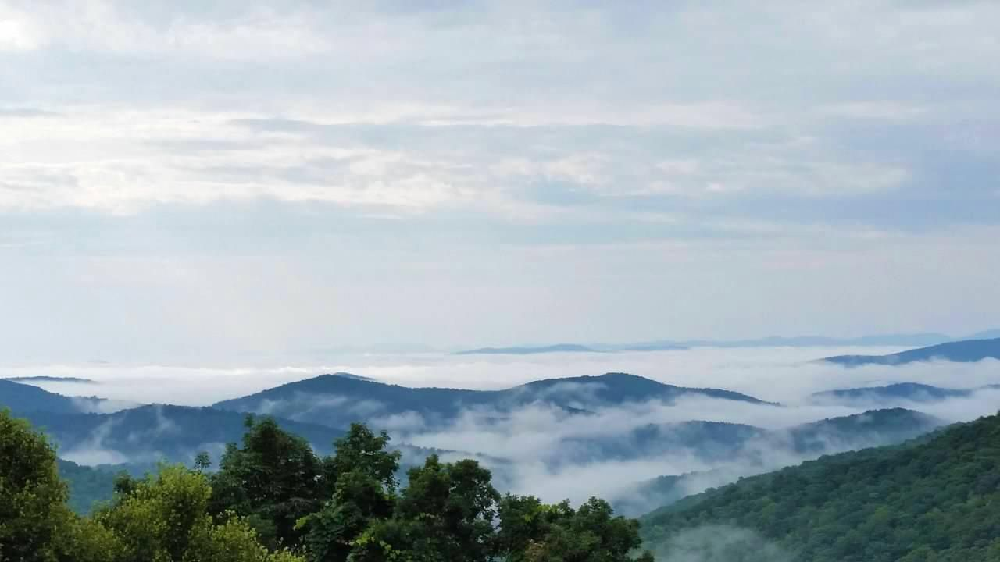
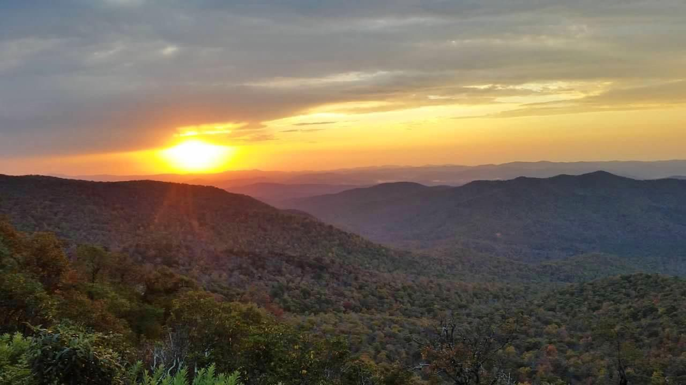
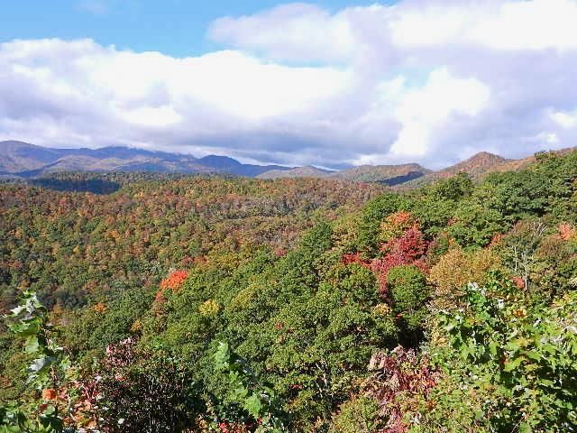
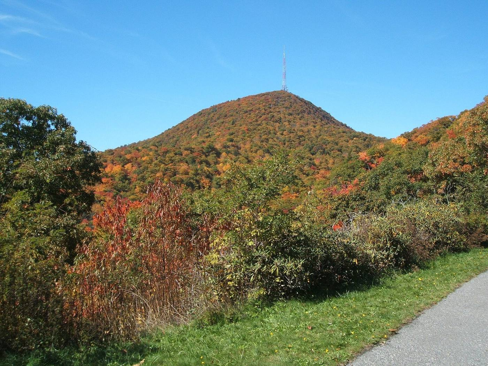


What to bring
The full checklist lives here. You can tap items to check them off on your phone:
- Your stuff: sleeping bag, pillow, warm layers (fleece, jacket, beanie, warm socks), long pants, rain jacket, hiking shoes, and a phone charger cable.
- For the hike: headlamp (charged!), water bottle, a snack, and a warm layer for the summit.
- Before you leave: download music and shows, since there's little or no cell service at camp.
Mount Pisgah camping · Fri Oct 2 – Sat Oct 3, 2026 · site B26, Loop B · Martin + Eli.
Updated Sep 28, 2026.
Photos. Site B26 (3 photos), tent setup: NPS via Recreation.gov. Campground in fall: Jim Joly via Recreation.gov. Campground road, morning clouds, sunset, fall view: NPS photos (public domain), nps.gov. Mount Pisgah in October 2008: Kewp, Wikimedia Commons, CC BY-SA 3.0. Hero: PBarn424, Mt-Pisgah-Fall.jpg, CC BY-SA 4.0. Mount Pisgah from NC 151 and in Oct 2016: Thomson200, Wikimedia Commons, CC0. Observation platform, Buck Spring Lodge ruins, Parkway view: w_lemay, Wikimedia Commons, CC BY-SA 2.0. Map: NPS Mount Pisgah Campground map via Recreation.gov, annotated.
Data. Drive times: OSRM and Valhalla (OpenStreetMap) routing. Forecast: National Weather Service (api.weather.gov). October normals: Open-Meteo ERA5 history, 2006–2025. Sun times: sunrise-sunset.org. Trails: NPS Blue Ridge Parkway, AllTrails. Campground info: NPS and Recreation.gov.